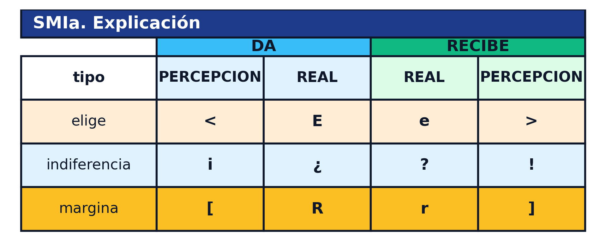
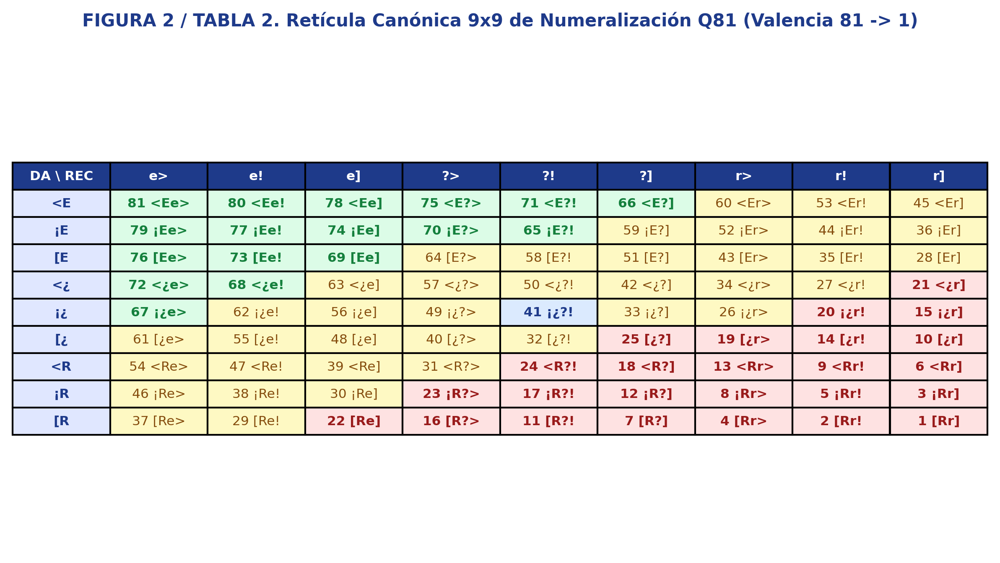

Hacia una Física de lo Grupal: los 3 pilares conceptuales que articulan el tejido social.
⚛️PILAR 1
Termodinámica Social
Cuantificamos la entropía y la densidad relacional para definir el estado dinámico del colectivo: Caos, Gas, Líquido, Sólido o Plasma.
"La Densidad Relacional mide la fricción y la cohesión que deciden la estabilidad o el cambio de estado del grupo."
🧩PILAR 2
Figuras Sociométricas
Unificamos en una sola unidad el DAR, el RECIBIR y sus expectativas mutuas en un espacio finito de 81 figuras sociométricas (Q81).
"Sustituimos el enredo de líneas del sociograma plano tradicional por mapas claros de relieve relacional."
🏛️PILAR 3
Rigor Científico & Ética
Metodología auditada y registrada en el CERN (Zenodo): rigor matemático, protección individual y ciencia abierta.
"Protegemos con rigor la intimidad de las personas evaluadas: garantía de confidencialidad contra falsos positivos."
💡 Pulsa en cualquiera de los 3 recuadros para desplegar su desarrollo completo en pantalla completa.
PILAR 1
La Termodinámica Social
Los grupos humanos no son organigramas muertos ni líneas planas que conectan puntos: son redes activas y dinámicas que intercambian afectos y expectativas, modulan tensiones y evolucionan de estado.
NEXORD sustituye el sociograma plano tradicional por un modelo tridimensional basado en la Termodinámica de Sistemas Fuera del Equilibrio (Prigogine, Nobel 1977; Bailey, 1990).
"No dibujamos el organigrama oficial: cartografiamos los vectores de fuerza y la entropía que deciden si el grupo avanza o colapsa."
Los Motores del Ecosistema: Densidad y Entropía
En el motor de NEXORD, todo colectivo humano es auditado bajo parámetros termodinámicos rigurosos:
Densidad Relacional (BDR / SDR):
Mide la fuerza gravitacional con la que los integrantes se eligen o rechazan, tanto en términos de Densidad Absoluta (BDR) como de Densidad Relativa (SDR).
Entropía Grupal:
Mide la fricción interna y la energía disipada en expectativas rotas, asimetrías posicionales y desencuentros diádicos.
Homeostasis Grupal:
Mide la capacidad del colectivo para autorregular sus tensiones y sostener un equilibrio operativo saludable.
Los 5 Estados de la Dinámica Grupal
A través del plano de densidad y entropía, identificamos la fase real del colectivo:
Caos (ausencia de estructura),
Gas (alta dispersión y baja adherencia),
Líquido (flujo óptimo y adaptabilidad),
Sólido (rigidez o enquistamiento) y
Plasma (altísima energía polarizada).
PILAR 2
Las 81 Figuras Sociométricas (Q81)
La unidad de análisis en NEXORD es el Tetragrama de 4 posiciones (A1, A2, A3, A4), que resuelve simultáneamente lo emitido, lo recibido y las expectativas mutuas:
Definición del Tetragrama SMIb
A1 (p_DA):La expectativa que el emisor tiene de lo que hará el partner.
A2 (DA):La preferencia efectiva que el emisor otorga al partner.
A3 (RECIBE):La preferencia efectiva que el partner otorga al emisor.
A4 (p_RECIBE):La expectativa que el partner tiene de lo que hará el emisor.
Los 3 estados fundamentales (+, 0, −) en las 4 posiciones diádicas agotan un espacio finito de 34 = 81 figuras sociométricas: desde el rechazo mutuo y recíproco 1 [Rr] hasta la preferencia y elección compartida plena 81 <Ee>, pasando por la neutralidad o indiferencia ¡¿?!.
"Condensamos la infinita variedad de vínculos humanos en un espacio topológico riguroso y cerrado de 81 figuras."
📊1. TABLA EXPLICATIVA DE LA LECTURA DE SMIa (COMPONENTES DE LA CELDA)

Sintaxis de la celda SMIa: Cuadrantes de preferencia real (DA, RECIBE) y metapercepción (p_DA, p_RECIBE), signos (+, 0, −) y delimitadores prototípicos (< >, ¡ !, [ ]).
🔢2. TABLA NUMERALIZADA Q81(9, 9) DE LAS 81 FIGURAS SOCIOMÉTRICAS

Matriz Numeralizada Q81(9, 9): Espacio exhaustivo de las 81 figuras sociométricas ordenadas por valencia relacional (desde 81 <Ee> hasta 01 [Rr]).
PILAR 3
Rigor Científico & Ética Deontológica
Un algoritmo mal calibrado o una interpretación ingenua pueden destruir la reputación de un miembro del grupo al etiquetarlo erróneamente como chivo expiatorio. El compromiso deontológico de NEXORD es: proteger al individuo contra falsos positivos.
"No toleramos el ruido estadístico: separamos el azar de la tensión estructural real con rigor matemático demostrable."
Validación Abierta en el CERN Zenodo
NEXORD no es una caja negra: algoritmos, variedades de Grassmann Gr(k, N) y matrices SMIb forman un corpus científico abierto y auditado en el CERN (Zenodo) con identificador persistente DOI:
Cumplimiento riguroso de protocolos de custodia ciega: las identidades permanecen protegidas y la devolución se efectúa bajo estricta deontología profesional y confidencialidad individual garantizada.